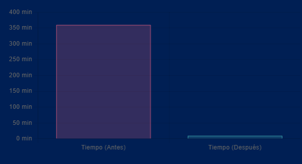

Diseño e implemento sistemas internos a medida para empresas de servicios que necesitan orden, visibilidad y datos reales para tomar decisiones.
Descubre cómo transformar la complejidad operativa en eficiencia real
Esta es una de las empresas que ya transformó su gestión interna con Nova System.
Una empresa de servicios con inventario y nómina gestionados en Excel operaba con bajo control y alta dependencia de tareas manuales.
Tras implementar un sistema de control operativo a medida, procesos que tomaban hasta 6 horas pasaron a ejecutarse en 10 minutos, reduciendo más del 95% del tiempo operativo y eliminando errores críticos.
Hoy la dirección cuenta con trazabilidad completa y métricas en tiempo real para operar con control, previsibilidad y criterio.
Un minimarket con gestión de inventario y ventas basada en registros manuales y libros físicos operaba con baja precisión y alta dependencia de procesos presenciales.
Tras implementar un sistema de control operativo y e-commerce a medida, la empresa logró automatizar el registro de entradas y salidas en tiempo real desde cualquier dispositivo (móvil o PC), eliminando la necesidad de agendar registros posteriores y reduciendo drásticamente el tiempo administrativo.
Hoy, la dirección de Francisco Montilla cuenta con un mapeo total del negocio y una dinámica de trabajo adaptada a las necesidades reales de sus vendedores, operando con eficiencia, seguridad por roles y trazabilidad absoluta.
@salvanovasolutions
Soy Salvatore Berticci, consultor y arquitecto de sistemas internos especializado en control operativo para empresas de servicios.
Ayudo a empresas de servicios a dar el salto del caos operativo a la eficiencia tecnológica. Con 5 años de experiencia como desarrollador, me he especializado en transformar negocios que han crecido más rápido que sus procesos y que hoy se encuentran atrapados en Excels frágiles y tareas manuales que limitan su visión.
Mi enfoque no es solo escribir código, sino diseñar e implementar sistemas internos a medida que devuelven el control total al dueño. Aporto trazabilidad absoluta y datos precisos para que puedas tomar decisiones basadas en criterios reales, no en suposiciones.
🎯 Identificamos los puntos ciegos de tu operación en áreas críticas como ventas y gestión de clientes. Analizamos cómo fluye la información y dónde se rompe el control, detectando tareas manuales en papel y Excel que generan riesgo y falta de visibilidad.
🧠 Construimos la infraestructura digital que centraliza el control de tu inventario y facturación. Diseñamos un sistema a medida que integra tus áreas críticas, garantizando datos reales y trazabilidad en tiempo real.
🚀 Con el control establecido en tu nómina y reportes operativos, refinamos el sistema para mejorar los márgenes. Convertimos los datos en tableros de mando que permiten dirigir la empresa con criterio y seguridad.
📊 Implementamos capas de validación que minimizan el error humano en tareas repetitivas. Tu operación deja de depender de la memoria de las personas para basarse en procesos sólidos y verificables.
El control operativo no es exclusivo de las grandes corporaciones. Una arquitectura de datos bien diseñada permite que cualquier empresa de servicios elimine el caos interno.
Como ejemplo de impacto, en un proyecto para el sector de telecomunicaciones, estructuramos un sistema central para gestionar inventario y nómina. Lo que antes era un registro manual disperso, se convirtió en un flujo de datos centralizado.
El resultado fue una reducción del 95% en los tiempos de respuesta operativa: procesos que requerían la atención de 5 personas durante 6 horas, hoy se ejecutan en 10 minutos con precisión absoluta.
Hoy, la dirección cuenta con trazabilidad completa y métricas en tiempo real, lo que permite una ejecución impecable y la eliminación de errores críticos que antes pasaban desapercibidos.

(Disminución de personal operativo y errores en tareas repetitivas)
No implementamos software genérico. Diseñamos sistemas alineados a la realidad operativa de cada empresa.
Obtén el control que necesitas sobre cada recurso, tarea y dato de tu empresa. Sin puntos ciegos ni información oculta.
Desarrollamos exactamente lo que tu operación demanda, resolviendo los problemas donde los sistemas genéricos fallan.
Elimina la desinformación. Aseguramos que los datos que alimentan tu toma de decisiones sean reales, precisos y oportunos.
Minimiza la vulnerabilidad de tu negocio ante errores operativos, fugas de información y falta de supervisión.
Prepara tu estructura interna para crecer de manera ordenada, sin que el aumento de clientes signifique un aumento proporcional del caos.
Sí. Especializamos nuestro trabajo en estructurar operaciones que hoy dependen de Excel o métodos manuales, creando un sistema centralizado que aporte orden y visibilidad real sobre la gestión diaria.
Es una evaluación técnica donde analizamos tus flujos de información actuales para detectar dónde pierdes el control, tiempo y dinero por falta de visibilidad de tus datos críticos.
No necesariamente. Diseñamos sistemas que cubren las necesidades específicas y críticas de tu operación —como inventarios o nóminas— que el software estándar suele ignorar, garantizando trazabilidad total.
Al adaptar el sistema a la realidad de tu negocio, la herramienta se convierte en el soporte clave para el trabajo diario, facilitando el control y asegurando la precisión de los datos reales.
Cualquier empresa de servicios que maneje inventarios, nóminas o reportes complejos y necesite una visión clara de su realidad operativa para crecer.
Dependiendo de la complejidad de tus requerimientos, el sistema suele estar operativo en un rango de 4 a 8 semanas, aportando control y orden desde las primeras etapas.
Se mide a través de la fidelidad de los datos, la eliminación de la incertidumbre operativa y la capacidad de la dirección para tomar decisiones basadas en información real y trazabilidad total.